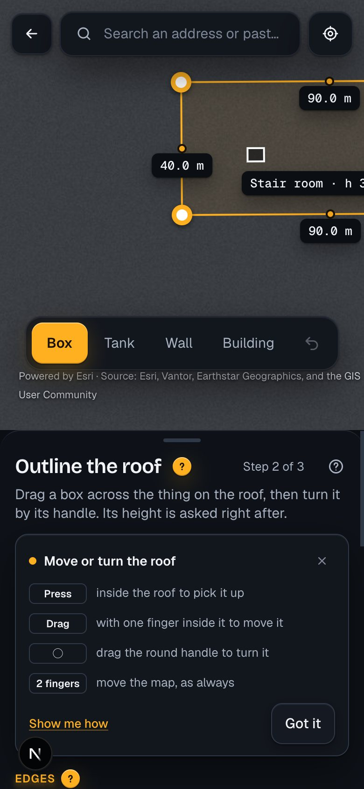
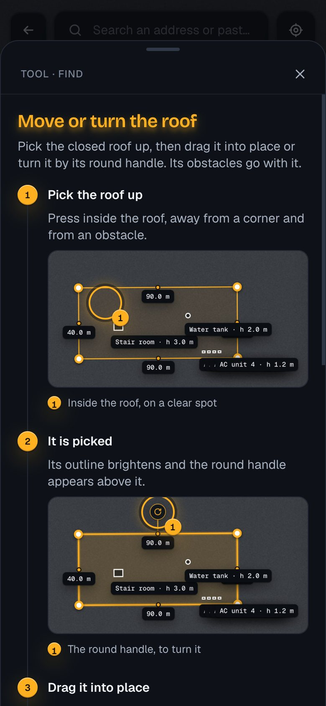
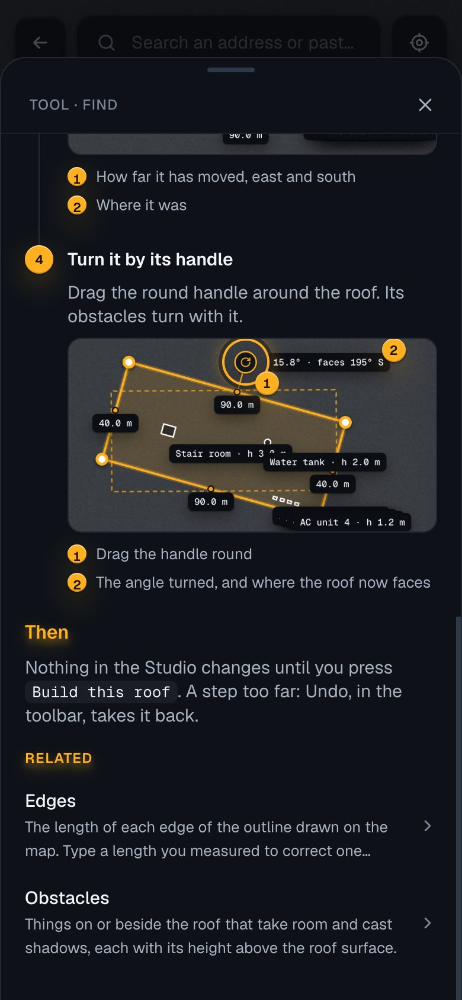
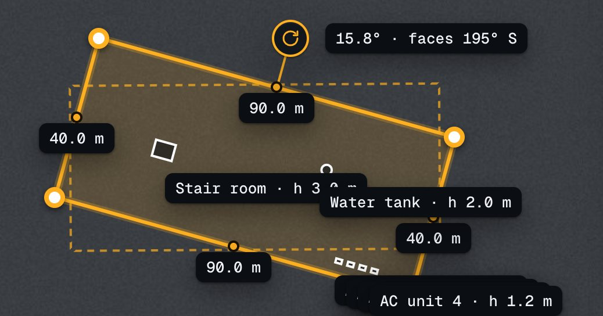

Help for Find's tools, as you asked: numbered steps, each with a picture of the app and callouts on it, in the same help sheet; built so that a short clip can take a picture's place later. Drawn by a prototype in the app (one topic, "Move or turn the roof", and its two ways in).



bun help:pictures), and the change is seen in the pull request.
0:09